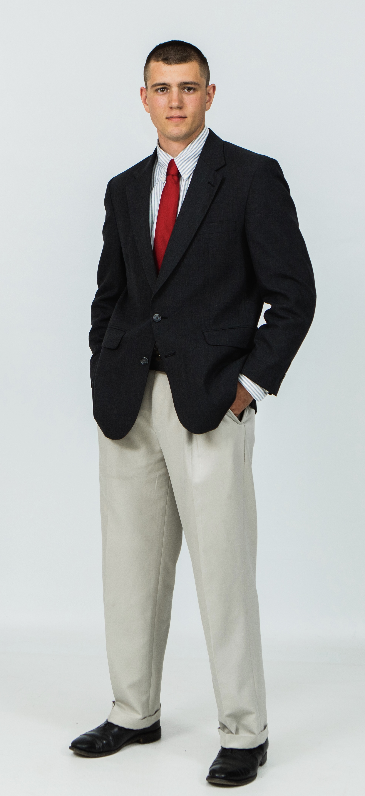

Welcome
David A.
Dunlap.
Thanks for stopping by. This is my personal home on the web.

More to come
Getting to know me.
I’m putting together a closer look at my experience, skills, and background. My resume will be here soon.